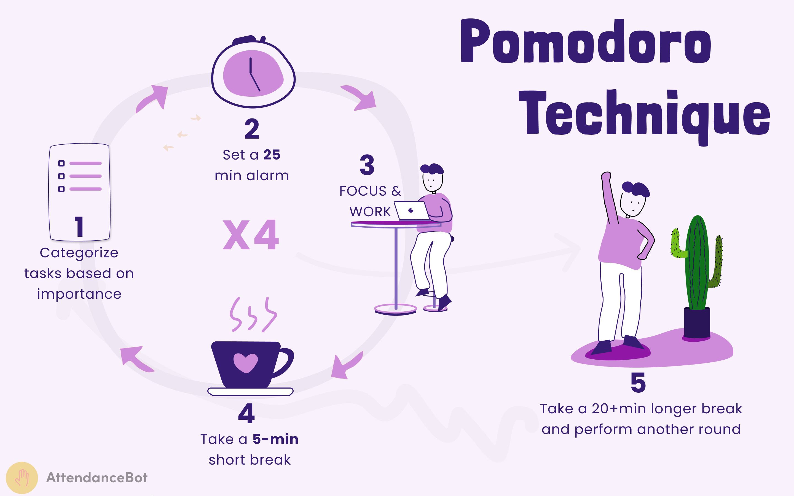

PomoDoro
The Pomodoro technique is a time management strategy that was devised in the 1980s by an Italian university student named Francesco Cirillo. This technique involves using a tomato-shaped kitchen timer to break down work intervals into a typical 25-minute timeframe. Five-minute breaks follow these 25-minute work sprints. ‘Pomodoro’ in Italian means “golden fruit” or “tomato,” which explains the genesis of this highly sought-after 40-year-old time management technique.

The inventor of this technique, Francesco Cirillo, first used a red-colored, tomato-shaped kitchen timer to time his 25-minute sessions. Francesco wanted to manage his time better and, thus, created a structured time management method using a trial-and-error approach.
He eventually defined it as a method “made up of processes, tools, principles and values to learn how to deal with time and turn it from a vicious predator to an ally to boost productivity.”
It isn’t often that a university pet project morphs into a global phenomenon. The Pomodoro technique managed this feat, while helping countless individuals manage their time better and accomplish more work in less time.
While the Pomodoro technique has been around for over four decades, there is a renewed interest in this method due to the recent changes to the workplace ecosystem. Globally, organizations have moved to hybrid and remote setups from bricks-and-mortar offices, leading to an unprecedented proliferation of digital apps, further eroding workers’ already low concentration levels.
Plus, the desire to achieve more has led to multi-tasking, an often counter-productive approach, as professionals shift from answering emails to preparing presentations, from writing proposals to solving problems, all the while struggling to manage their eight or nine-hour workday productively. Hence, the importance of using time as an ally and a strategic asset has led to a resurgence in the Pomodoro technique’s popularity.
What Is the Pomodoro Technique?
The Pomodoro technique refers to the concept of working with the time people have rather than against it. It advocates breaking up a workday into several 25-minute sessions, with five-minute breaks after each session. These five-minute intervals are called Pomodoros. The method includes taking a 15–20 minute break after four consecutive work sessions. Such a time management approach may seem counter-intuitive to productive output, as it advocates working for short 25-minute sprints. However, this staggered approach enables people to achieve more by instilling a sense of urgency, allowing them to focus on one task at a time instead of switching between multiple deliverables.
Besides, a long workday may instill in workers the false belief that they have endless time, which can lead to distractions and procrastination. The Pomodoro technique allows for breaks and distractions; it lets the users focus on work during those 25 minutes, while also allowing them to take short breaks for personal indulgences like surfing the internet or checking their mobile phone or social media messages.
Why Does the Pomodoro Technique Work?
The Pomodoro method of time management enables people to enhance productivity as they work in short bursts of 25 minutes. Thus, they can work on tasks without distractions. This technique also eliminates the temptation to multi-task, helping people focus on one deliverable. It helps build discipline by ensuring that users focus on their tasks for the allocated time, blocking out distractions. It allows them to concentrate only on the deliverable they have chosen to work on. Thus, they can negate tiredness and stress.
Mentioned below are some of the many reasons why the Pomodoro technique works:
1. Makes Work Fun
One of the reasons why the Pomodoro technique has stood the test of time and continues to be vastly used by professionals and students alike is that it makes work fun. Using time as an ally and working against a ticking clock gamifies assignments, which excites users by helping them break the monotony of daily tasks.
2. Easy to Start
The Pomodoro technique requires little to no investments and preparation. Instead, a simple timer on your smartphone or smartwatch suffices. You only need to identify the tasks you wish to accomplish and find a quiet place without distractions to get started. The technique is no-frills and easy to use, which is why it works well for professionals and students alike.
3. Increases the Pace of Work
Instilling a sense of urgency works wonders for completing tasks. The Pomodoro technique uses the same principle by changing the users’ mindset. Instead of believing that they have countless hours to accomplish their work, they operate against a ticking clock, which creates a sense of hurry and helps increase productivity and the pace of work.
How to Pomodoro
Applying this tested technique is easy. It doesn’t require any special tools aside from a timer. Below is the four-step method to apply the Pomodoro technique for higher productivity.

Step 1: Choose Your Task
The first step is to zero in on the task you wish to complete. Choosing what you want to work on is critical as it allows you to get into the mindset of working efficiently and concentrating.
Step 2: Set the Timer to 25 Minutes
The second step is to set a 25-minute timer. You don’t need a special timer, and a simple wristwatch or mobile timer suffices.
Step 3: Work on the Task Until the Timer Goes Off
The third step is to focus on the task you have chosen to work on for those 25 minutes; work on that deliverable until the timer goes off.
Step 4: Take a 5-Minute Break
In step 4 of the process, take a 5-minute break after the intense 25-minute work session. You can use this time to relax or check your mobile phone or social media.
Step 5: Repeat the Process for the Desired Duration
You can repeat this process for as long as required. Typically, a professional can complete 12-14 such sessions during a workday. However, the number of sessions you work is an individual choice, and is often dependent on whether you have the luxury of shutting out everything else – such as client meetings or Zoom calls that require you to interact with team members.
Reasons to Use the Pomodoro Technique
You may be a student, a young professional or an industry veteran. Irrespective, you can optimize your time management by using the Pomodoro technique. There are many reasons why you should use the Pomodoro technique. We have listed some of them below:

1. Reduces Procrastination
The Pomodoro technique helps negate procrastination, which is one of the primary reasons for work-related delays. This time management technique allows you to block all distractions and focus on the task. Hence, you do not procrastinate and use time as your ally to complete your work in the given timeframe. As you fixate on accomplishing specific tasks, you can fully dedicate your time and energy to them without worrying about other work-related commitments.
2. Improves Productivity
Enhanced productivity is an outcome of using the Pomodoro technique
The idea of taking frequent breaks between tasks, especially after 25 minutes, may not appeal to professionals used to long working hours without interruptions. That uninterrupted work boosts productivity is a prevalent belief. However, the Pomodoro technique creates a sense of urgency, allowing people to increase speed and efficiency during those 25-minute sprints. This increased urgency is linked to Cirillo’s idea of using time as an ally, rather than a “vicious predator.”
3. Negates Stress
Managing time while juggling multiple deliverables can be stressful, can reduce efficiency and can decrease output. Plus, stress also impacts a worker’s output quality, as their focus shifts from working on a task to managing their workload, in a given duration. The Pomodoro technique allows users to focus on a single 25-minute time cycle, helping them block out stress and plan their deliverables better.
4. Helps Increase Focus
While multi-tasking is considered a desirable approach, it often leads to reduced productivity as people sift through tasks instead of completing one task efficiently and effectively. Switching between tasks reduces focus and leads to delays and lower output. The Pomodoro method helps individuals concentrate on one deliverable, enhancing their output, and helping them manage their workload optimally.
Pomodoring Tips
The Pomodoro method is a proven technique to boost productivity. However, using it efficiently requires careful planning. Here are a few things to consider.
Pomodoro Tips
1. Plan Your Sessions in Advance
Planning the Pomodoro way of working can be challenging when you have meetings and client calls lined up throughout the day. Besides, such distractions defeat the purpose of the Pomodoro exercise. Therefore, plan your sessions in a way that you have ample time and no professional commitments.
2. Feel Free to Customize
The 25-minute rule for the Pomodoro technique is not cast in stone. You can opt for longer or shorter sessions, depending on the quantum of work and your ability to concentrate. However, resist the temptation of exceedingly long sessions, as the idea of Pomodoro is to work in short bursts and capitalize on the advantage of using time as an enabler.
3. Avoid Using the Technique for Personal Tasks
The Pomodoro method works exceedingly well in office setups when working on professional engagements. However, employing this technique for personal activities like reading a book or drafting a letter can be counter-productive as they are not goal-oriented tasks. Therefore, it has its limitations.
4. Create the Necessary Enablers to Optimize the Process
The Pomodoro technique can’t offer the desired outcome when enablers like a peaceful working environment aren’t in place. Switching off your mobile phone or putting it on silent mode, turning off email notifications, and finding a quiet workplace are crucial factors for boosting productivity. Thus, focus on creating a positive and inspiring work environment to optimize the effect of the Pomodoro technique.
5. Use Free Apps
You can use one of the many free apps available on Android and iOS, and similar platforms. Even low-cost smartwatches and smartphones come equipped with the Pomodoro timer. Thus, you do not need to buy a tomato-shaped timer to benefit from this time management technique.
Frequently Asked Questions
1. Why is it called the Pomodoro technique?
Pomodoro in Italian means “golden fruit” or “tomato.” The inventor of this technique, Francesco Cirillo, first used a red-colored, tomato-shaped kitchen timer to time his 25-minute sessions. Then, as the technique resonated with him, allowing him to get more work done during those timed sessions, he named the technique “the Pomodoro technique,” after the timer.
2. Who invented the Pomodoro technique?
An Italian university student named Francesco Cirillo invented the Pomodoro technique in the 1980s. He wanted to manage his time better and, thus, created a structured time management method. He defined it as a method “made up of processes, tools, principles and values to learn how to deal with time and turn it from a vicious predator to an ally to boost productivity.”
3. What is the Pomodoro technique for studying?
The Pomodoro technique for students involves studying for 25-minute sessions, followed by a 5-minute break. Students can repeat the process for as long as desired. They can choose to take longer breaks if they plan to study for a long duration. But, first, they must identify the topic or subject they wish to study and find a quiet place to achieve the desired result.